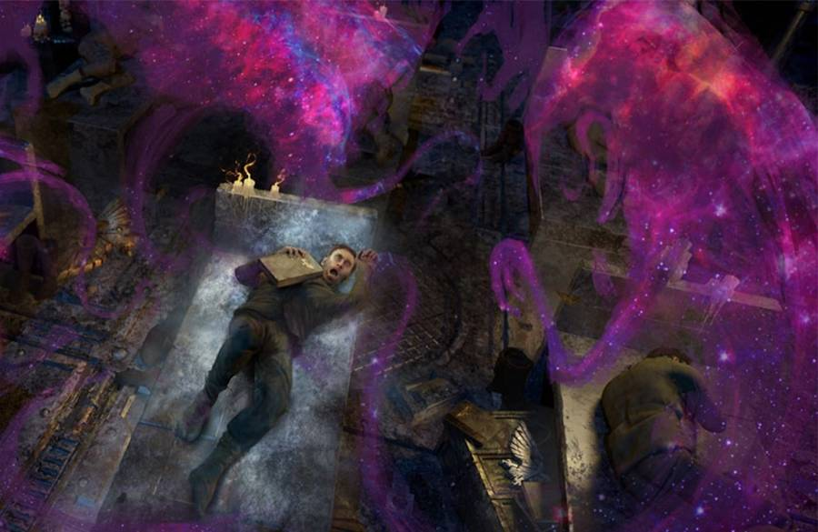
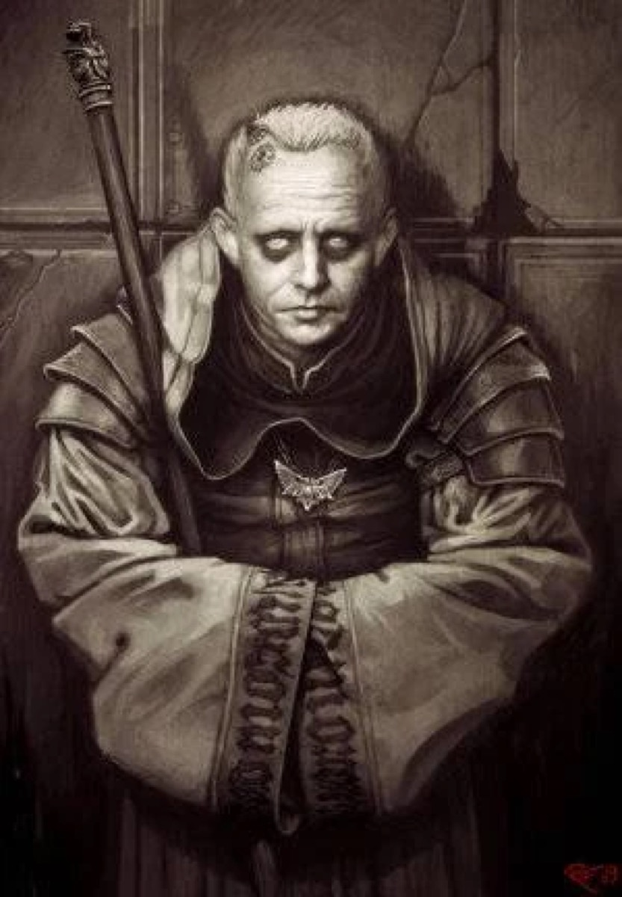

Psyker
| Psyker Witch | |
|---|---|
 Artwork © Games Workshop Artwork © Games Workshop | |
| Nature | Mind linked to the Warp |
| Frequency | Rare but rising; sharp increase in the Psychic Awakening (early M42) |
| Legal status | Unsanctioned psykers outlawed; sanctioned psykers serve the Imperium |
| Collected by | Black Ships of the Adeptus Astra Telepathica |
| Trained by | Scholastica Psykana |
| Policed by | Inquisition (Ordo Hereticus, Ordo Malleus); Sisters of Silence; Commissars |
| Grading | The Assignment (Omega Minus to Alpha Plus) |
| Notable psykers | Emperor of Mankind; Malcador the Sigillite; Magnus the Red; Mephiston |
A psyker, known in common speech as a witch, is a person whose mind is linked to the Warp, the realm of psychic energy that underlies the material universe, and who can draw on its power to affect the world: to read and command minds, to see the future, to move objects, to cast fire or lightning. Psykers occur among humans and among many alien species. In the Imperium of Mankind they are both indispensable and feared. The Imperium depends on psykers for interstellar communication, navigation and the light of the Astronomican, yet every psyker is a potential doorway through which daemons may enter the material world.[1][2]
Imperial law therefore forbids any psyker to live free. Every world must hand over the psykers born on it to the Black Ships of the Adeptus Astra Telepathica as part of the Imperial tithe. On Terra they are tested and sorted. The strong-willed are trained and become sanctioned psykers: astropaths, battle psykers of the Astra Militarum, Librarians of the Adeptus Astartes or servants of the Inquisition. The weak and the dangerous are consumed in sustaining the Emperor of Mankind on the Golden Throne and powering the Astronomican, or destroyed. Psykers who escape the system are called unsanctioned or rogue psykers and are hunted as heretics.[1][3]
The opening of the Great Rift in 999.M41 was followed by the Psychic Awakening, a surge in the number and power of psychic births across the galaxy, which has strained the system of collection beyond its capacity.[4]
Nature
[edit]A psyker's mind casts a reflection in the Warp. Through it, the psyker can channel the energies of the Immaterium into reality. Every use of psychic power carries danger: the psyker may lose control, burning out his own mind or unleashing destructive energy, or a daemon may seize the opening and possess him. Psykers are also visible to the entities of the Warp, which are drawn to them; Imperial sources describe an untrained psyker as a beacon in the dark. The Imperial Cult teaches that psychic power is a mutation and a curse, and the Ecclesiarchy's canon "suffer not the witch to live" is widely quoted, though it is not applied to sanctioned psykers.[1][5]
Imperial scholars distinguish psykers by their disciplines, the kinds of power they command: telepathy, telekinesis, divination, pyromancy and biomancy are the most commonly recorded. Psykers also possess witch-sight, the ability to perceive the Warp and the souls of others directly, which many describe as their truest sense.[1]

The Assignment
[edit]The Adeptus Astra Telepathica grades psykers on a scale called the Assignment, which uses the letters of an ancient Terran alphabet. Its twenty-four grades run from Omega, the least sensitive, to Alpha, the most powerful; grades beyond Alpha are distinguished as "plus" grades.[1]
| Grades | Description |
|---|---|
| Omega Minus | "Blanks" or untouchables, whose presence negates psychic power |
| Psi to Sigma | Resistant to psychic influence to varying degrees |
| Rho, Pi | The human baseline; no conscious power. Most citizens are graded Rho or Pi |
| Omicron to Kappa | Minor, unconscious psychic activity |
| Iota to Eta | Conscious psykers who control their power with effort; all Iota and higher are subject to collection |
| Zeta, Epsilon | Powerful psykers; candidates for sanctioning if strong-willed |
| Delta to Alpha | Extraordinarily powerful; about one in a billion births |
| Alpha Plus and above | Beyond the scale; capable of catastrophe. The Emperor is reckoned beyond any grade |
The higher plus grades are largely theoretical; Imperial records claim no ordinary human has exceeded Gamma Plus. Imperial accounts of the destructive power of Alpha-grade psykers are often thought to be exaggerated, and some may serve to justify their execution.[1][6]
History
[edit]Before the Imperium
[edit]Psykers became more numerous among humans during the Dark Age of Technology, and their multiplication in the last centuries of that age is held to be one of the causes of the Age of Strife (c. M25–M30), in which daemonic incursions and psychic catastrophe destroyed many human worlds. Some worlds survived by killing all psykers; others fell.[7]
The Great Crusade
[edit]The Emperor of Mankind, the greatest psyker of his species, used psykers widely in the Unification Wars (c. M30) and the Great Crusade (c. 798.M30–005.M31). The Scholastica Psykana was founded under Malcador the Sigillite to gather and train them, and Librarians served in most of the Space Marine Legions. The Thousand Sons under Magnus the Red were a Legion of psykers. Use of psychic power was nonetheless controversial, and at the Council of Nikaea (c. 001.M31) the Emperor ruled that the Legions should disband their Librarius divisions, a decree overturned during the Horus Heresy (005–014.M31) under the pressure of war.[7][8]
The Imperium of the 41st millennium
[edit]Since the Emperor's interment on the Golden Throne in 014.M31, the needs of the Throne and the Astronomican have depended on a steady supply of psykers, and the system of collection by the Black Ships has become one of the foundations of the Imperium. The Ordo Hereticus hunts rogue psykers, and the Ordo Malleus those possessed by daemons.[3][6]
The Psychic Awakening
[edit]In the first years of the 42nd millennium, after the opening of the Great Rift, psychic births and the power of existing psykers increased sharply across the galaxy. Imperial records call the period the Psychic Awakening or the Age of Witches. Many worlds were overwhelmed by witch-plagues, and the Black Ships could not keep pace.[4]
Sanctioned psykers
[edit]
Psykers judged strong enough are trained by the Scholastica Psykana and soul-bound or sanctioned for service. The main forms of service are:[1]
- Astropaths, telepaths soul-bound to the Emperor, who carry messages across the stars.
- Battle psykers and Primaris psykers of the Astra Militarum, assigned to regiments and watched by Commissars who are ordered to kill them if they lose control.
- Librarians of the Adeptus Astartes, warrior psykers recruited and trained by their own Chapters.
- Psykers of the Inquisition, including Inquisitors who are psykers themselves, and the Grey Knights, every one of whom is a psyker.
- The Navigators of the Navis Nobilite, a hereditary form of psychic mutation recognised by Imperial law.
Timeline
[edit]| Date | Event |
|---|---|
| Late M25 | Psychic births multiply; beginning of the Age of Strife |
| c. M30 | Scholastica Psykana founded under Malcador |
| c. 001.M31 | Council of Nikaea restricts psychic power in the Legions |
| 014.M31 | Emperor interred; psyker sacrifice sustains the Throne |
| 999.M41 | Great Rift opens |
| Early M42 | Psychic Awakening |
See also
[edit]References
[edit]- ^ a b c d e f g Codex: Leagues of Votann (9th Edition), pg. 12. Games Workshop. Abnett, Dan. Eisenhorn (Omnibus Novel). Black Library, "Xenos", pg. 334; "Malleus", Ch. 7.
- ^ Warhammer 40,000 Rulebook (8th Edition), pg. 41. Games Workshop. Sanders, Rob. Atlas Infernal (novel). Black Library, Act III, Canto II.
- ^ a b Swallow, James. Flight of the Eisenstein (novel). Black Library. McNeill, Graham. Thousand Sons (novel). Black Library.
- ^ a b Abnett, Dan. Prospero Burns (novel). Black Library. McNeill, Graham. The Outcast Dead (novel). Black Library.
- ^ Mitchell, Sandy. Caves of Ice (novel). Black Library. Swallow, James. Faith and Fire (novel). Black Library.
- ^ a b Abnett, Dan. Ravenor Rogue (novel). Black Library. Warhammer 40,000: Rulebook (7th Edition) (Digital Edition), pp. 275, 279, 320, 328, 541, 543. Games Workshop.
- ^ a b Codex: Space Marines (6th Edition), pp. 80, 165. Games Workshop. Warhammer 40,000: Rulebook (6th Edition), pp. 138-139, 165, 177, 404, 418-423. Games Workshop.
- ^ Codex: Imperial Guard (5th Edition), pg. 33. Games Workshop. Codex: Space Marines (5th Edition), pp. 56-57. Games Workshop.